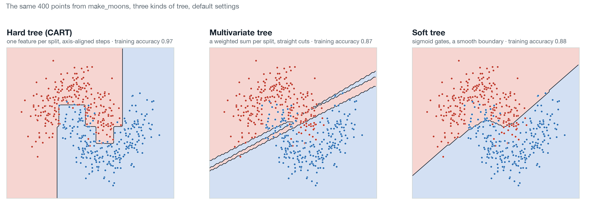
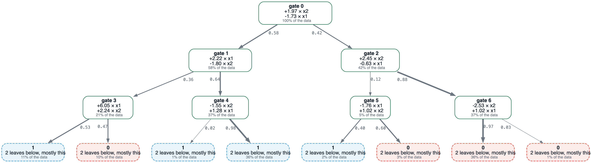

neural-trees'i Yazdım. Artık Başkaları Kullanabilir. Ne Yapıyor, Ne Yapmıyor.
Birkaç aydır neural-trees'i yazıyorum ve artık başkalarının önüne koyabileceğim bir noktaya geldi.
Gradyan inişiyle eğitilen ağaç biçimli modeller için scikit-learn uyumlu bir kütüphane: yumuşak karar ağaçları, çok değişkenli ve omnivariate ağaçlar, hiyerarşik uzman karışımı ve öğrenirken büyüyen bir ağ. Algoritmalar Ethem Alpaydın'ın grubundan; uygulamalar, düzeltmeler ve ölçümler benim.

Model listesinden daha çok önemsediğim iki şey
Birincisi, her iddia ölçülüyor. README'deki kıyaslama tablosu CI'da yeniden üretiliyor ve bir hücre kayarsa derleme düşüyor. Makalelerin açık bıraktığı tasarım kararları (yumuşak ağaç nasıl büyümeli, yeni birim artıktan mı başlamalı, ne zaman durmalı) fikirle değil ölçümle karara bağlandı; aleyhime çıkanlar da belgelendi.
İkincisi, model kendini açıklayabiliyor. explain() tek bir tahmin için ağaçtaki yolu, her kapıyı belirleyen özellikleri ve cevabı çevirecek en küçük değişikliği veriyor; o değişiklik yeniden tahmin edilerek doğrulanıyor. Eğitilmiş ağaç yalnızca numpy ile tahmin yapan bir JSON dosyasına ve ONNX'e çıkıyor; ONNX'te bir tahmin yaklaşık 11 mikrosaniye sürüyor ve ne torch'a ne kütüphaneye ihtiyaç duyuyor.

Dürüst bir sonuç
24 veri kümesinde XGBoost, LightGBM, GRANDE ve NODE'a karşı, hiçbiri ayarlanmadan, yumuşak modeller küçük tablolarda (birkaç yüz satır) kazanıyor, binin üstünde kaybediyor. Binlerce satırınız varsa ve tek derdiniz doğruluksa LightGBM kullanın. Birkaç yüz satırınız varsa ve her kararı açıklamak zorundaysanız, bu on dakikanıza değer.
İlk tam vaka çalışması herkese açık German Credit verisi üzerinde: 1.000 kredi başvurusu ve veri kümesinin kendi maliyet matrisi. Yumuşak ağaç doğrulukta, AUC'de ve maliyette lojistik regresyonla başa baş; üstüne küçük bir kural ağacı ve her başvuru için gerçek bir başvuranın ulaşabileceği bir karşı örnekle birlikte bir yol ekliyor. Ayarlanmamış boosting modelleri doğrulukta eşit, maliyette kaybediyor, çünkü olasılıkları kalibre değil ve maliyet ağırlıklı bir karar tam da kalibrasyonun bedelinin ödendiği yer. Kat kat sayılardan model belgesine kadar bütün paket tek bir betikten yeniden üretiliyor: cases/german-credit.
Nerede bulunur
Kendi CSV ya da Excel dosyanızla tarayıcıda deneyebilirsiniz, kurulum yok: neural-trees.streamlit.app.
- Kod: github.com/cgrtml/neural-trees
- Kurulum:
pip install neural-trees - Belgeler: cagritemel.com/neural-trees
- Arşivlenmiş sürüm: doi.org/10.5281/zenodo.22718897
Birkaç yüz ile birkaç bin satır arasında, her kararın açıklanmak zorunda olduğu bir tablonuz varsa iki hafta içinde ücretsiz bir vaka çalışması yaparım; alacağınız şey yukarıdaki German Credit paketi. Issue ve pull request'e açığım; şimdiye kadar açılanların hepsi ölçülmüş bir raporla geldi, öyle kalsın isterim.